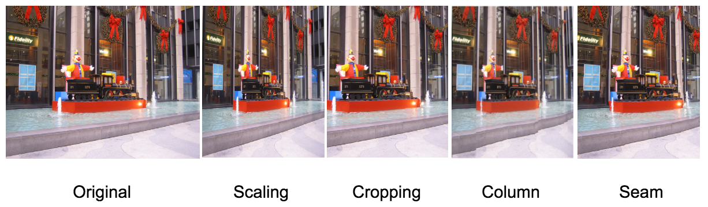

Team Members:
Chang Guo
Haiyun Jin
Zhicheng Gu
View the PDF version.
Effective resizing of image with content awareness (reimplementing seam carving: Avidan & Shamir 07)
The diversity and versatility of display devices today imposes new demands on digital media. For instance, webpage browsed on phones and laptops shows can automatically resize the letters and use different layout to ensure the comfortness for the user. While, standard image scaling is not sufficient since the contents are affected uniformly. With a smaller device, we better show more important content to emphasize the theme the image wants to convey.
The effective content-aware resizing algorithm has lots of appealing applications, such as aspect ratio change, image retargeting, content amplification, or object removal.
There are several proposed methods such as Scaling, Cropping, Column removal, Pixel removal or Optimal removal. Scaling preserves all information but it leads to unrealistic aspect ratio when only one dimension is scaled, the objects in the image looks uncomfortable. Cropping is such a solution when contents are centralized with well-defined shape, but it can not handle situations where the contents are spreaded. While column removal can preserve the irregular shape and details to large extends, it creates artificial incontinuity along smooth boundary. Others like Pixel removal and Optimal removal has no guarantee of preserving the important content and, even worse, the geometry of the image.
Figure 1: Comparison of different image resizing methods
We are planning to do the project in the following steps. The Step 1 and Step 2 contain the main algorithm we need to finish. The Step 3 - Step 7 are some possible applications taken from the original Seam Carving paper. We would also like to try to implement other interesting applications in Step 8. If we still have time after finishing the main algorithm and the applications, we would try to implement the seam carving in video. We plan to implement the algorithm in Matlab or Python.
one dimension seam carving
The one dimension seam carving is the basic content-aware resizing algorithm. This approach removes one seam in the image each time. The points to be removed is selected by calculating the energy function.
two dimension seam carving
The two dimension seam carving is basically an extension of one dimension seam carving. However, one thing that we need to consider is order of removing the horizontal lines and vertical lines.
enlarge
This application implements an image enlarging system. To enlarge an image, we need to approximate an ‘inversion’ of this time evolution and insert new ‘artificial’ seams to the image.
content amplification
Besides enlarging the size of the image, seam carving can be used to amplify the content of the image while maintain its size. This can be done by scaling the image first and then do a seam carving to set it back to the origin size.
Gradient image
seam carving + poisson solver
Object removal
This application is an interesting idea that we want to spend more time on. The algorithm for object removal need to be done with a user interface. The user will draw a mask on the object to be removed. Then the we will run seam carving to remove the mask while maintain the change of other parts unnoticeable.
Multi-size
Sometimes users don't know the final size of the image. We cannot compute the resize images again and again since it is going to cause too much time. We need to use a dynamic programming approach to solve this problem.
other possible applications
We are also interested in finding and implementing other awesome ideas in the seam carving filed.
Website demo
We will create an interactive online tools for user to upload their own images and resize to desired dimension.
Video
| Date | Tasks |
|---|---|
| Feb 07 - Feb 15 | Project Proposal. Discuss about steps and timeline for the project, and applications we want to implement. Create web page. |
| Feb 16 - March 01 | Write code to compute the edge-based measure for an input image. Implement the dynamic programming code to find the optimal seam to remove along one direction. Compare different energy functions for content aware resizing. |
| March 02 - March 29 | Complete two dimension seam carving. Use it to reduce the width of an image and compare it with other algorithms like Crop, Column, Pixel and Optimal carving. Complete the image enlarging and content amplification application. Write Mid-term report. |
| March 30 - April 15 | Implement seam carving in the gradient domain and object removal applications. |
| April 16 - April 23 | Implement seam carving for multi-size images, which allows the user to retarget an image in a web page. If time allowed, we might extend seam carving to videos. Prepare for final presentation. |
| April 24 - May 08 | Complete project webpage. |